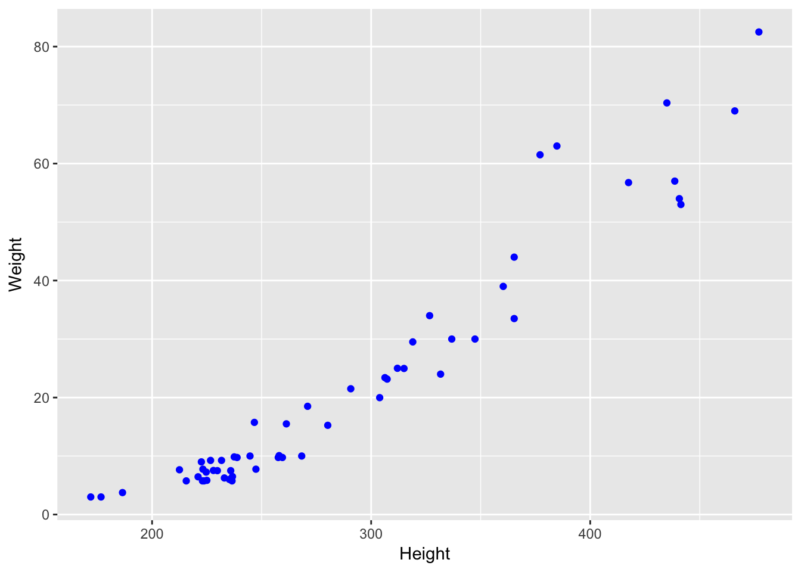

Розділ 11 Лінійна регресія
11.1 Коваріація та кореляція
До цього часу ми працювали над аналізом однієї змінної. Тепер ми перейдемо до аналізу взаємозв’язків між двома змінними.
Коваріація – міра лінійної залежності двох випадкових величин одна від одної. Кореляція – зважена версія коваріації.
Коефіцієнт кореляції (ще має назву коефіцієнт Пірсона) обчислюється за формулою:
\[r = \frac{cov(X,Y)}{\sqrt{var(X)} \sqrt{var(Y)}} = \frac {\sum{(x_i - \bar{x})(y_i - \bar{y})}}{\sqrt{\sum{(x_i - \bar{x})^2}\sum{(y_i - \bar{y})^2}}}\]
В R коефіцієнт для обчислення коефіцієнта кореляції використовується функція cor, яка по замовчуванню рахує коефіцієнт кореляції Пірсона(є й інші коефіцієнти кореляції).
Абсолютне значення коефіцієнта кореляції дає уявлення про силу лінійного зв’язку між двома змінними. Знак коефіцієнта вказує напрямок зв’язку. Коефіцієнт кореляції набуває значень [– 1,1]. Якщо коефіцієнт близький до 1 - говорять про сильну позитивну кореляцію, до -1 про сильну негативну. Значення коефіцієнта близькі до 0 вказують на відсутність лінійної кореляції.
Властивості коефіцієнта кореляції:
- коефіцієнт кореляції не змінюється при зміні одиниць виміру(наприклад від кілограм до грам)
- коефіцієнт кореляції є симетричним r(x, y) = r(y, x)
- коефіцієнт кореляції чутливий до викидів
11.2 Лінійна регресія
Якщо коефіцієнт кореляції дає нам розуміння чи є лінійна залежність між двома змінними, то лінійна регресія дає модель для оцінки як зміниться одна змінна при зміні іншої. Наприклад, може визначити, як вага дорослої анаконди при зміні її довжини.
anaconda <- read.csv("anaconda.dat", sep="", header = FALSE)
colnames(anaconda) <- c("Height", "Weight", "Sex")Побудуємо графік розсіювання для наших даних:
ggplot(anaconda, aes(x=Height, y=Weight)) +
geom_point(col="blue")
На основі цього графіка, можемо припустити, що є позитивна лінійна залежність між довжиною та вагою дорослих анаконд. Знайдемо коефіцієнт кореляції:
cor(anaconda$Height, anaconda$Weight)## [1] 0.9613875Дійсно, ці дві змінні мають сильну позитивну лінійну залежність.
Лінійна регресія передбачає що ми побудуємо лінію, яка якнайкраще описуватиме наші дані.
Формула цієї лінії:
\[\hat y = ax + b\]
де x - незалежна змінна (в нашому прикладі це довжина), y - залежна змінна (вага анаконд).
a - це кут нахилу цієї прямої (slope)
b - точка перетину з y, де x = 0 (intercept)
Як знайти цб лінію? Через ці точки можна провести безліч ліній, один з найчастіше вживаних для побудови “найкращої лінії” - метод найменших квадратів. Серед всіх ліній, найкращою ввжається та, сума квадратів залишків якої є найменшою.
Залишок - ці різниця між справжнім значенням залежної змінної y та тим, яке передбачає моделі, тобто \(y - \hat y\). Відповідно в процесі знаходження найкращої ліній ми мінімізуємо \(\sum{(y - \hat y)^2}\).
Є формули для обчислення коефіцієнтів a та b. Однак ми скиристаємось функціоналом R.
Для знаходження найкращої лінії, яка й буде нашою моделлю, будемо використовувати функцію lm. Вказуємо формулу залежності Weight ~ Height означає, шо ми будуємо лінійну модель залежності змінної Weight від змінної Height.
prediction_model <- lm(Weight ~ Height, data=anaconda)Для оцінки результатів лінійної моделі використовується функція summary:
summary(prediction_model)##
## Call:
## lm(formula = Weight ~ Height, data = anaconda)
##
## Residuals:
## Min 1Q Median 3Q Max
## -9.2050 -3.9127 -0.2454 1.9430 16.8067
##
## Coefficients:
## Estimate Std. Error t value Pr(>|t|)
## (Intercept) -50.730584 2.946034 -17.22 <2e-16 ***
## Height 0.253047 0.009857 25.67 <2e-16 ***
## ---
## Signif. codes: 0 '***' 0.001 '**' 0.01 '*' 0.05 '.' 0.1 ' ' 1
##
## Residual standard error: 5.754 on 54 degrees of freedom
## Multiple R-squared: 0.9243, Adjusted R-squared: 0.9229
## F-statistic: 659 on 1 and 54 DF, p-value: < 2.2e-16Давайте подивимось, яку інформацію про модель ми отримали:

Значення коефіцієнта Height(відповідає a в загальній моделі \(\hat y = ax +b\)) становить 0.253,
Intercept(відповідаєb) становить -50.73. Тобто формула залежності ваги анаконди від її довжини: \[\hat Weight = 0.253 Height -50.73 \]
Це означає, що при збільшенні довжини на 1 см, вага збільшується на 0.253 кг або ж 253 грами.
Також досить корисним для трактування результатів є коефіцієнт \(R^2\). Рахується як квадрат коефіцієнта кореляції, тому має значення від 0 до 1. Основна його цінність у тому, що він говорить, який відсоток варіативності залежної змінної пояснюється лінійною моделлю. Відповідно залишок пояснюється змінними, які не включені в модель. Для лінійної моделі залежності ваги анаконд від їх довжини залишок складає 8%. До змінних, які можуть покращити модель належить, наприклад, стать або вік цих анаконд.
Також в ggplot2 (як і в базовому функціоналі R) лінію регресії можна додати до графіка розсіювання:
ggplot(anaconda, aes(x=Height, y=Weight)) +
geom_point(col="blue") +
geom_smooth(method = "lm", se=FALSE)
Умови для побудови лінійної регресії:
- Лінійність (тобто наявність лінійної залежності між незалежною та залежною змінною)
- Нормальний розподіл залишків
- Гомоскедастичність (стала варіативність залишків)
За цим посиланням https://gallery.shinyapps.io/slr_diag/ ви можете змоделювати дані з різними типами залежності та дослідити, як при цьому будуть виглядати лінія регресії, коефіцієнт кореляції, \(R^2\), та як виглядає розподіл залишків.
Екстраполяція – застосування моделі, до діапазону даних., для якого моделювання не проводилося. Сам підхід гарно ілюстрює XKCD комікс http://xkcd.com/605/. Якщо ви сьогодні вийшли заміж, то вчора у вас було 0 чоловіків, сьогодні 1, через місяць 30, а через рік 365 :) 
Важливо уникати екстраполяції, оскільки ми не знаємо, як зміниться тренд для даних, яких ми ще не бачили.